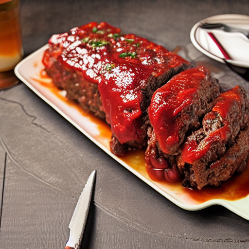

Pain de viande
Préparation: 10 minutes
Cuisson: 70 minutes
Total: 1 heure 20 minutes
Ingrédients
-
1 sachet de soupe à l'oignon knorr

-
1 kg de boeuf haché extra maigre
-
1/2 t de chapelure
-
2 oeufs
-
1/2 t de ketchup maison
-
1/4 t de ketchup maison (pour recouvrir)
Instructions
Préchauffer le four à 180 °C (350 °F)
Dans un grand bol, combiner tous les ingrédients
- 1 sachet de soupe à l'oignon knorr
- 1 kg de boeuf haché extra maigre
- 1/2 t de chapelure
- 2 oeufs
- 1/2 t de ketchup maison
Mouler le mélange dans un plat allant au four de 3.5 L (13 po x 9 po). Recouvrir le mélange avec 1/4 t de ketchup maison. Déposer le plat dans un autre plat avec de l'eau pour cuire le pain de viande en bain marie. Cela permet une cuisson plus uniforme et évite aux parois de coller et de trop cuire.
Cuire au four à découvert pendant environ 70 minutes.